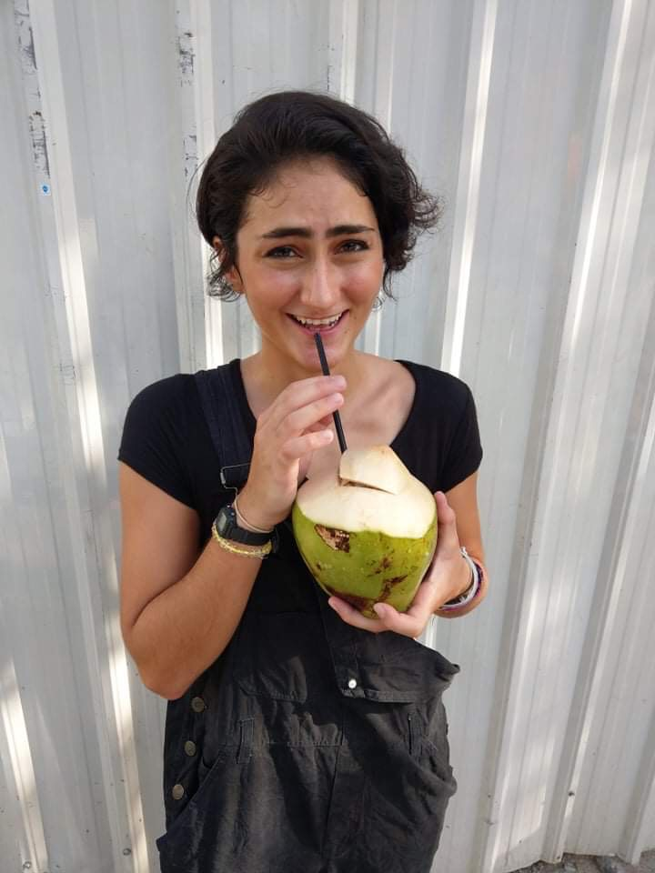
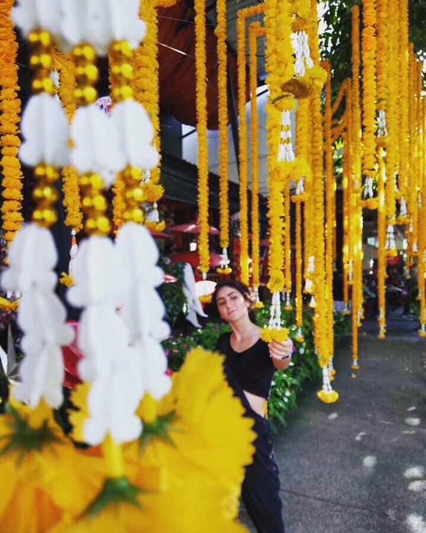
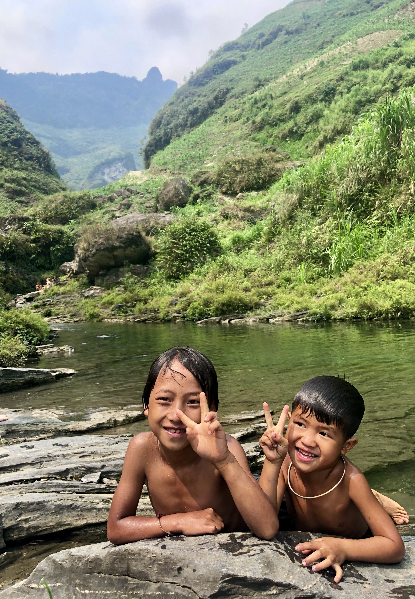
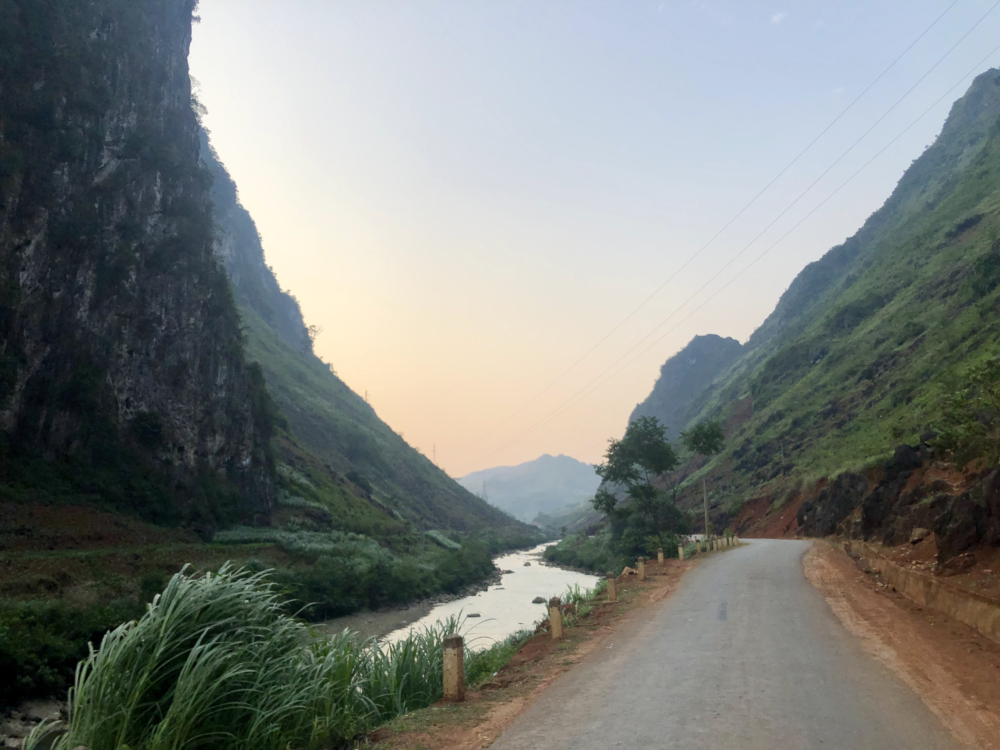

Who's Mair you ask?!
This is me aka Mair aka Maryam aka NightMair??
Okay... jokes aside, my name is Maryam, commonly go by Mair (pronounced like hair but with M, easy!). Growing up I moved around the globe quite a bit.
I was born in Toronto Canada, attended elementry school in Tehran Iran, moved to United States when I was 13 years old and went to University of Michigan for College.
After college, I decided to pack my bags and head to South East Asia where I taught English in Thailand for almost a year.
I love nature and traveling. I seek nature for quietude, inspiration, peace, gratitude and happiness. I travel to seek learning oppurtunities, growth, and adventure.
I have lived in 6 countries, traveled to 17 and counting.
Here are some (I could not fit everything in one page) of my favorite pictures from my time abroad.
 

I find joy in being creative with my mind and body. Surfing, water-painting, writing, swimming, designing, and yoga are some of my favorite ways to express myself creatively.

With all of that being said, I also love coding.
Coding has been an ultimate tool to enable me manifest my ideas into a tangible reality.
It's like ~magic~
Check out my portfolio to see some of the projects I have worked on so far, in my never-ending journey of learning the art of coding.